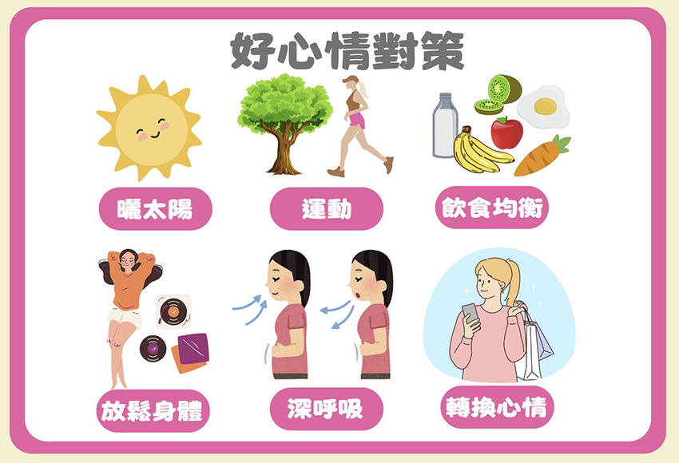

|
懷孕期間，由於荷爾蒙分泌改變加上懷孕的不安全感，使得孕婦身心承受巨大的負擔，常會有不穩定的情緒表現；研究調查，有50~80%女性會在生產的前後感到心情低落，可能莫名悲傷流淚、擔心無法做好照護角色等，也會覺得孤單、寂寞，或是很想發脾氣，每個人情緒變化皆不同。
從懷孕開始到寶寶出生，身體賀爾蒙的變化、家中新成員的到來，對生活都是一大衝擊與挑戰，難免會造成許多壓力與情緒改變，常見的情緒如下: 1.煩躁：孕婦因妊娠不適反應感到心情煩悶不安，愛發脾氣。 嚴重的情況下，有15~20%的母親罹患周產期憂鬱症，指的是從懷孕開始到產後一個月期間出現憂鬱症狀，如果孕期的不開心來來去去、不影響日常生活，都是正常的情緒表現，但若發現情緒低落狀態超過一週、甚至兩週，或頻率很高、常陷入低潮便很難恢復，就要留意是否為憂鬱症（孕期暨產後憂鬱症或稱周產期憂鬱症）。 孕期暨產後憂鬱症9大症狀： 若符合5項以上、每天出現、連續超過2週，且已影響生活功能者，就可能有憂鬱症的傾向，建議尋求專業醫師的診療。
容易罹患孕期暨產後憂鬱症的高風險族群： 1.孕前即有憂鬱或焦慮症狀，或上一胎也有憂鬱症狀況。 孕產婦在整個生產旅程有情緒波動，是很常見的事。會經歷內分泌的生理變化，生產帶來的壓力與環境改變，整個家庭都需要調適，以下提供幾項好心情對策，促進心理健康生活指南，讓我們一同迎接好心情。 1.曬太陽 每日沐浴在陽光下至少15分鐘，有助血清素的提升，建議著長袖衣物，讓陽光直接灑在身上，可增加維他命D與骨質密度，降低壞心情的發生，若過程中有太熱等不適，應盡快休息補充水分。 2.運動 有氧運動、走路或多接觸大自然，有助血清素的提升，控制孕期體重、減少孕期不適。 3.飲食均衡，攝取快樂食物 除了均衡飲食，有些食物也有幫助提升正面情緒的效用，如：香蕉可提升血清素；彩椒、燕麥有益於減緩沮喪；綠色蔬菜、核桃也有益於正向情緒的帶動。少吃油膩甜食，少量多餐為宜。 4.放鬆練習，漸進式肌肉放鬆法 躺著或坐在有靠背的椅子上，有意識地收緊身體各部位肌肉（例如：緊握雙拳、用力拱背、腳尖用力下壓等），再慢慢放鬆各部位肌肉，可從大肌肉到小肌肉，感受身體放鬆，讓心情也跟著放鬆，每日練習1～2回，讓身體肌肉不再緊繃。 5.多深呼吸，腹式呼吸 吸氣時，肚子隆起、吐氣時，肚子內縮，儘可能放慢速度，每回進行3～5次，懷孕後期，肚子的隆起與內縮可能不易察覺，慢慢吸氣與吐氣即可。 6.改變造型轉換心情 換髮型或買件新衣服、變換房間的佈置，都會帶來一種新鮮感，進而改變心情。做喜歡的事，如聽音樂、繪畫、閱讀或郊遊，自然美感所引起的情感，會使孕婦對生活的興趣提高。 |
|||

|  |
1.懷孕期間的情緒改變-認識周產期憂鬱
2.懷孕期間情緒改變
3.7對策調整孕媽咪情緒起伏，否則憂鬱頻率過高，可能變成憂鬱症！